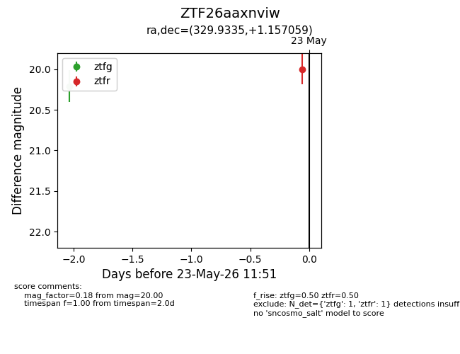
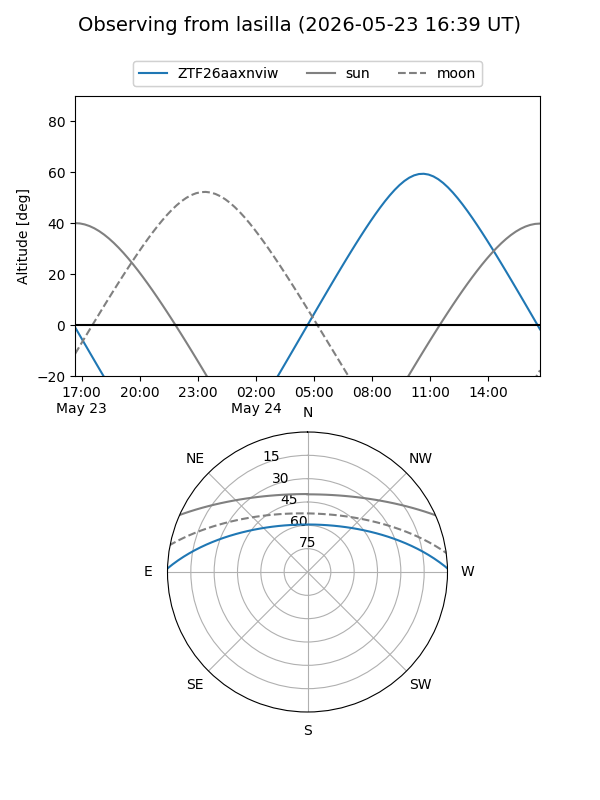
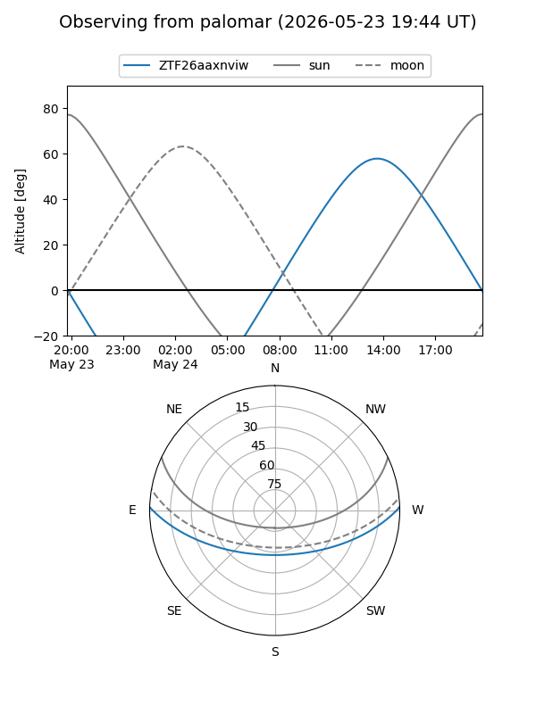
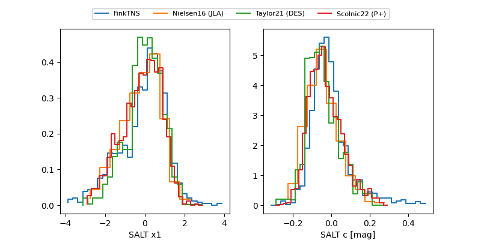

ZTF26aaxnviw
Target ZTF26aaxnviw at 2026-05-23 11:53
Aliases and brokers:
lsst-FINK: link
lsst-Lasair: link
lsst-ALeRCE: link
ztf-FINK: link
ztf-Lasair: link
ztf-ALeRCE: link
alt names
ZTF26aaxnviw (ztf,fink_ztf)
Coordinates:
equatorial (ra, dec) = 329.9335,+1.15706
equatorial (HMS+DMS) = 21:59:44.03,+01:09:25.41
galactic (l, b) = (60.2548,-39.96644)
Flags:
Photometry:
last ztfg=20.21, ztfr=20.00
1 ztfg, 1 ztfr detections
Lightcurve

Visibility


Additional plots
